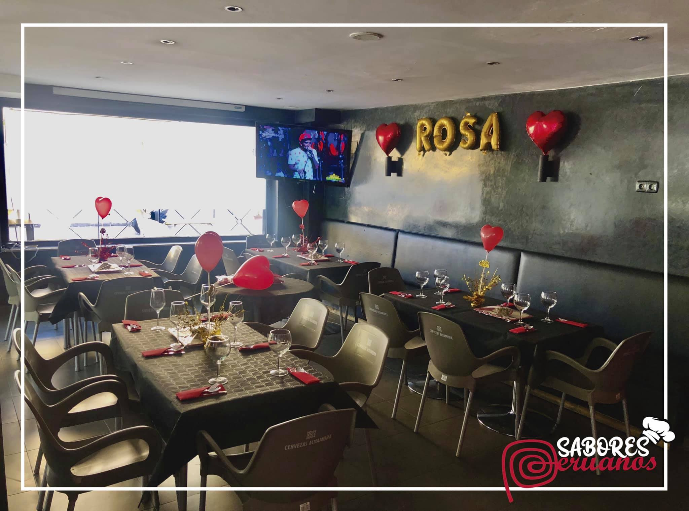

Descubre la variedad de platos que ofrecemos en Sabores Peruanos. Cada imagen es un viaje a través de la rica gastronomía peruana.
En Sabores Peruanos, ofrecemos un espacio ideal para tus eventos. Reserva tu mesa y disfruta de una experiencia gastronómica única.
En Sabores Peruanos, cada plato es una obra maestra que refleja la diversidad y riqueza de la gastronomía peruana. Desde el ceviche fresco hasta el lomo saltado, cada bocado te transporta a un viaje culinario único. ¡Ven y disfruta de una experiencia gastronómica inolvidable!
En Sabores Peruanos, hemos tenido el honor de recibir a varios influencers y personalidades que han disfrutado de nuestra gastronomía. Aquí te mostramos algunas de sus visitas.